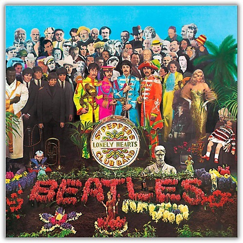
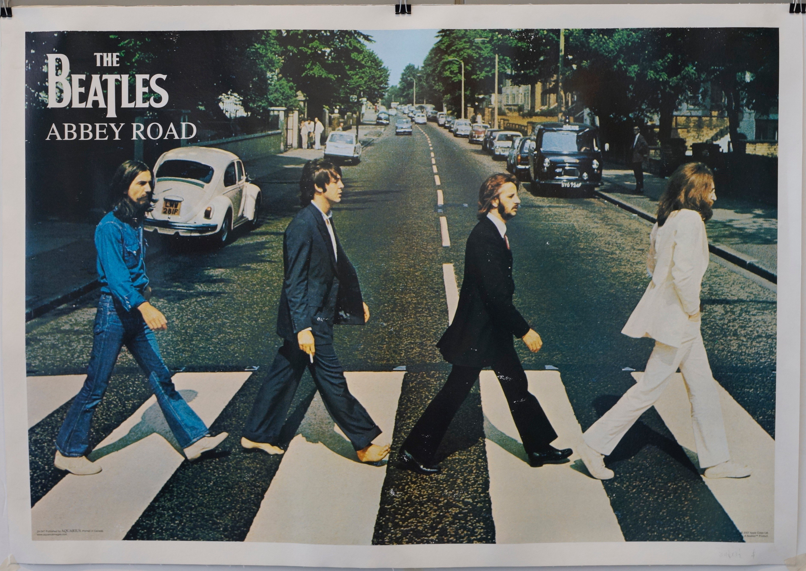
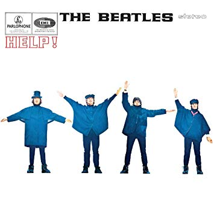

The Beatles fue una banda de rock inglesa activa durante la década de 1960, y reconocida como la más exitosa comercialmente y la más alabada por la crítica en la historia de la música popular y de la música rock.
| Portada | Albúm | Año |
|---|---|---|
|  | The Beatles Sgt. Pepper's Lonely Hearts Club Band | 1967 |
|  | The Beatles Abbey Road | 1969 |
|  | The Beatles Help! | 1965 |